Making Maps with R
Intro
For a long time, R has had a relatively simple mechanism, via the maps package, for making simple outlines of maps and plotting lat-long points and paths on them.
More recently, with the advent of packages like sp, rgdal, and rgeos, R has been acquiring much of the functionality of traditional GIS packages (like ArcGIS, etc). This is an exciting development, but not always easily accessible for the beginner, as it requires installation of specialized external libraries (that may, on some platforms, not be straightforward) and considerable familiarity with GIS concepts.
More recently, a third approach to convenient mapping, using ggmap has been developed that allows the tiling of detailed base maps from Google Earth or Open Street Maps, upon which spatial data may be plotted. Today, we are going to focus on mapping using base maps from R’s tried and true maps package and also using the ggmap package. We won’t cover the more advanced GIS-related topics nor using rgdal, or sp to plot maps with different projections, etc. Nor will cover the somewhat more simplified approach to projections using the mapproj package.
As in our previous explorations in this course, when it comes to plotting, we are going to completely skip over R’s base graphics system and head directly to Hadley Wickham’s ggplot2 package. Hadley has included a few functions that make it relatively easy to interact with the data in R’s maps package, and of course, once a map layer is laid down, you have all the power of ggplot at your fingertips to overlay whatever you may want to over the map. ggmap is a package that goes out to different map servers and grabs base maps to plot things on, then it sets up the coordinate system and writes it out as the base layer for further ggplotting. It is pretty sweet, but does not support different projections.
Today’s Goals
- Introduce readers to the map outlines available in the
mapspackage- Show how to convert those data into data frames that
ggplot2can deal with - Discuss some
ggplot2related issues about plotting things.
- Show how to convert those data into data frames that
- Use
ggmapto make some pretty decent looking maps
I feel that the above twp topics should cover a large part of what people will need for making useful maps of field sites, or sampling locations, or fishing track lines, etc.
For today we will be skipping how to read in traditional GIS “shapefiles” so as to minimize the number of packages that need installation, but keep in mind that it isn’t too hard to do that in R, too.
Prerequisites
You are going to need to install a few extra packages to follow along with this lecture.
# these are packages you will need, but probably already have.
# Don't bother installing if you already have them
install.packages(c("ggplot2", "devtools", "dplyr", "stringr"))
# some standard map packages.
install.packages(c("maps", "mapdata"))
# the github version of ggmap, which recently pulled in a small fix I had
# for a bug
devtools::install_github("dkahle/ggmap")Load up a few of the libraries we will use
library(ggplot2)
library(ggmap)
library(maps)
library(mapdata)Plotting maps-package maps with ggplot
The main players:
- The
mapspackage contains a lot of outlines of continents, countries, states, and counties that have been with R for a long time. - The
mapdatapackage contains a few more, higher-resolution outlines. - The
mapspackage comes with a plotting function, but, we will opt to useggplot2to plot the maps in themapspackage. - Recall that
ggplot2operates on data frames. Therefore we need some way to translate themapsdata into a data frame format theggplotcan use.
Maps in the maps package
- Package
mapsprovides lots of different map outlines and points for cities, etc. - Some examples:
usa,nz,state,world, etc.
Makin’ data frames from map outlines
ggplot2provides themap_data()function.- Think of it as a function that turns a series of points along an outline into a data frame of those points.
- Syntax:
map_data("name")where “name” is a quoted string of the name of a map in themapsormapdatapackage
Here we get a USA map from
maps:usa <- map_data("usa") dim(usa) #> [1] 7243 6 head(usa) #> long lat group order region subregion #> 1 -101.4078 29.74224 1 1 main <NA> #> 2 -101.3906 29.74224 1 2 main <NA> #> 3 -101.3620 29.65056 1 3 main <NA> #> 4 -101.3505 29.63911 1 4 main <NA> #> 5 -101.3219 29.63338 1 5 main <NA> #> 6 -101.3047 29.64484 1 6 main <NA> tail(usa) #> long lat group order region subregion #> 7247 -122.6187 48.37482 10 7247 whidbey island <NA> #> 7248 -122.6359 48.35764 10 7248 whidbey island <NA> #> 7249 -122.6703 48.31180 10 7249 whidbey island <NA> #> 7250 -122.7218 48.23732 10 7250 whidbey island <NA> #> 7251 -122.7104 48.21440 10 7251 whidbey island <NA> #> 7252 -122.6703 48.17429 10 7252 whidbey island <NA>Here is the high-res world map centered on the Pacific Ocean from
mapdataw2hr <- map_data("world2Hires") dim(w2hr) #> [1] 2274539 6 head(w2hr) #> long lat group order region subregion #> 1 226.6336 58.42416 1 1 Canada <NA> #> 2 226.6314 58.42336 1 2 Canada <NA> #> 3 226.6122 58.41196 1 3 Canada <NA> #> 4 226.5911 58.40027 1 4 Canada <NA> #> 5 226.5719 58.38864 1 5 Canada <NA> #> 6 226.5528 58.37724 1 6 Canada <NA> tail(w2hr) #> long lat group order region subregion #> 2276817 125.0258 11.18471 2284 2276817 Philippines Leyte #> 2276818 125.0172 11.17142 2284 2276818 Philippines Leyte #> 2276819 125.0114 11.16110 2284 2276819 Philippines Leyte #> 2276820 125.0100 11.15555 2284 2276820 Philippines Leyte #> 2276821 125.0111 11.14861 2284 2276821 Philippines Leyte #> 2276822 125.0155 11.13887 2284 2276822 Philippines Leyte
The structure of those data frames
These are pretty straightforward:
longis longitude. Things to the west of the prime meridian are negative.latis latitude.order. This just shows in which orderggplotshould “connect the dots”regionandsubregiontell what region or subregion a set of points surrounds.group. This is very important!ggplot2’s functions can take a group argument which controls (amongst other things) whether adjacent points should be connected by lines. If they are in the same group, then they get connected, but if they are in different groups then they don’t.- Essentially, having to points in different groups means that
ggplot“lifts the pen” when going between them.
- Essentially, having to points in different groups means that
Plot the USA map
- Maps in this format can be plotted with the polygon geom. i.e. using
geom_polygon(). geom_polygon()drawn lines between points and “closes them up” (i.e. draws a line from the last point back to the first point)- You have to map the
groupaesthetic to thegroupcolumn - Of course,
x = longandy = latare the other aesthetics.
Simple black map
By default, geom_polygon() draws with no line color, but with a black fill:
usa <- map_data("usa") # we already did this, but we can do it again
ggplot() + geom_polygon(data = usa, aes(x=long, y = lat, group = group)) +
coord_fixed(1.3)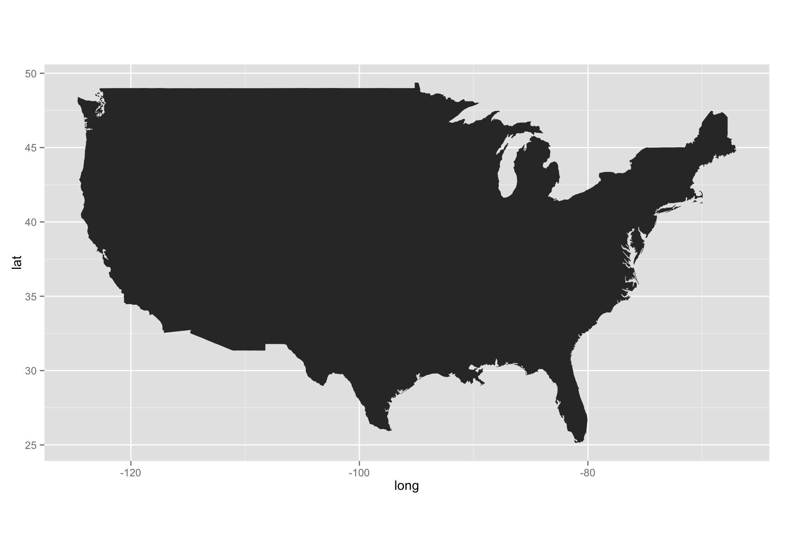
What is this coord_fixed()?
- This is very important when drawing maps.
- It fixes the relationship between one unit in the y direction and one unit in the x direction.
- Then, even if you change the outer dimensions of the plot (i.e. by changing the window size or the size of the pdf file you are saving it to (in
ggsavefor example)), the aspect ratio remains unchanged. - In the above case, I decided that if every y unit was 1.3 times longer than an x unit, then the plot came out looking good.
- A different value might be needed closer to the poles.
Mess with line and fill colors
Here is no fill, with a red line. Remember, fixed value of aesthetics go outside the
aesfunction.ggplot() + geom_polygon(data = usa, aes(x=long, y = lat, group = group), fill = NA, color = "red") + coord_fixed(1.3)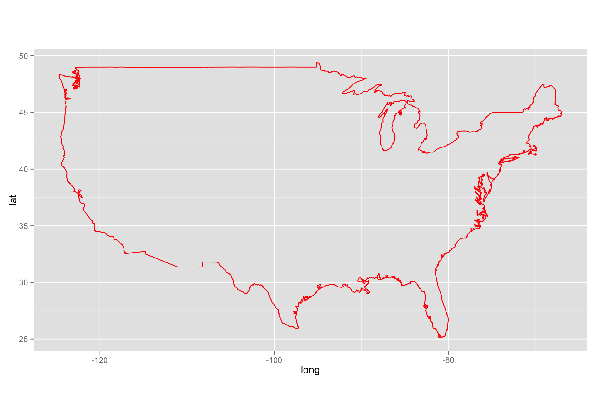
Here is violet fill, with a blue line.
gg1 <- ggplot() + geom_polygon(data = usa, aes(x=long, y = lat, group = group), fill = "violet", color = "blue") + coord_fixed(1.3) gg1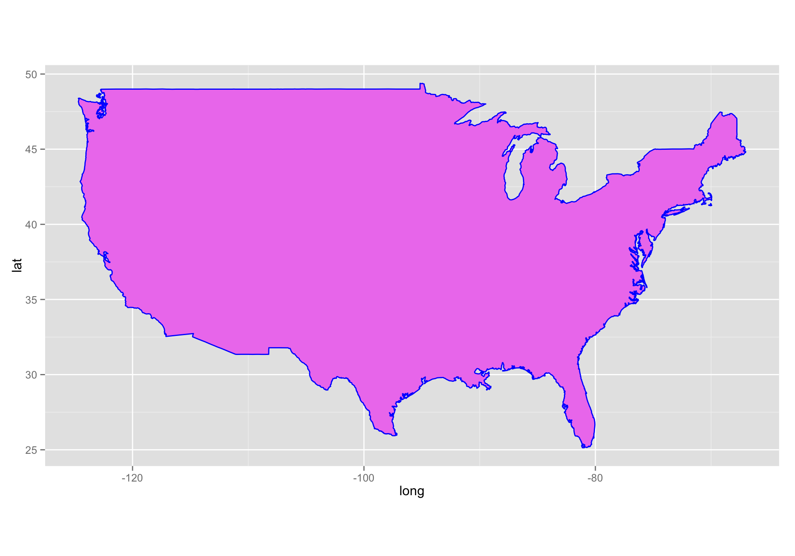
Adding points to the map
Let’s add black and yellow points at our lab and at the NWFSC in Seattle.
labs <- data.frame( long = c(-122.064873, -122.306417), lat = c(36.951968, 47.644855), names = c("SWFSC-FED", "NWFSC"), stringsAsFactors = FALSE ) gg1 + geom_point(data = labs, aes(x = long, y = lat), color = "black", size = 5) + geom_point(data = labs, aes(x = long, y = lat), color = "yellow", size = 4)
See how important the group aesthetic is
Here we plot that map without using the group aesthetic:
ggplot() +
geom_polygon(data = usa, aes(x=long, y = lat), fill = "violet", color = "blue") +
geom_point(data = labs, aes(x = long, y = lat), color = "black", size = 5) +
geom_point(data = labs, aes(x = long, y = lat), color = "yellow", size = 4) +
coord_fixed(1.3)That is no bueno! The lines are connecting points that should not be connected!
State maps
We can also get a data frame of polygons that tell us above state boundaries:
states <- map_data("state")
dim(states)
#> [1] 15537 6
head(states)
#> long lat group order region subregion
#> 1 -87.46201 30.38968 1 1 alabama <NA>
#> 2 -87.48493 30.37249 1 2 alabama <NA>
#> 3 -87.52503 30.37249 1 3 alabama <NA>
#> 4 -87.53076 30.33239 1 4 alabama <NA>
#> 5 -87.57087 30.32665 1 5 alabama <NA>
#> 6 -87.58806 30.32665 1 6 alabama <NA>
tail(states)
#> long lat group order region subregion
#> 15594 -106.3295 41.00659 63 15594 wyoming <NA>
#> 15595 -106.8566 41.01232 63 15595 wyoming <NA>
#> 15596 -107.3093 41.01805 63 15596 wyoming <NA>
#> 15597 -107.9223 41.01805 63 15597 wyoming <NA>
#> 15598 -109.0568 40.98940 63 15598 wyoming <NA>
#> 15599 -109.0511 40.99513 63 15599 wyoming <NA>Plot all the states, all colored a little differently
This is just like it is above, but we can map fill to region and make sure the the lines of state borders are white.
ggplot(data = states) +
geom_polygon(aes(x = long, y = lat, fill = region, group = group), color = "white") +
coord_fixed(1.3) +
guides(fill=FALSE) # do this to leave off the color legend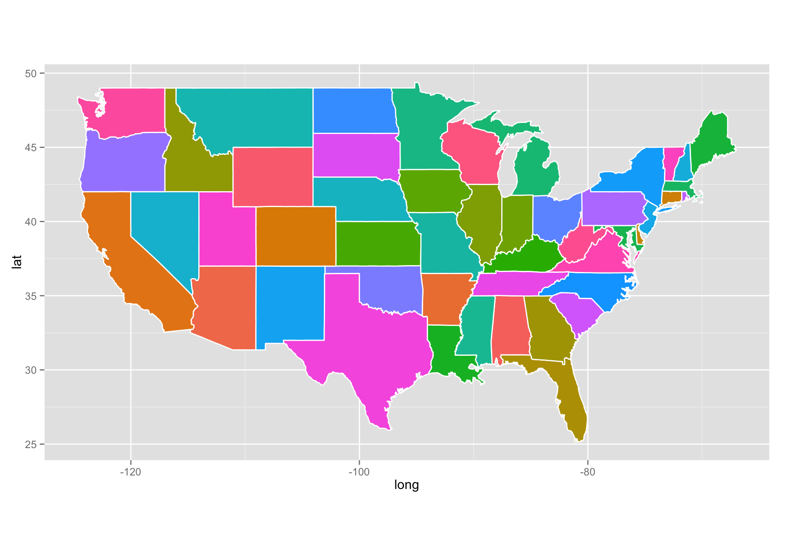
Boom! That is easy.
Plot just a subset of states in the contiguous 48:
- Read about the
subsetcommand. It provides another way of subsetting data frames (sort of like using the[ ]operator with a logical vector). We can use it to grab just CA, OR, and WA:
west_coast <- subset(states, region %in% c("california", "oregon", "washington")) ggplot(data = west_coast) + geom_polygon(aes(x = long, y = lat), fill = "palegreen", color = "black")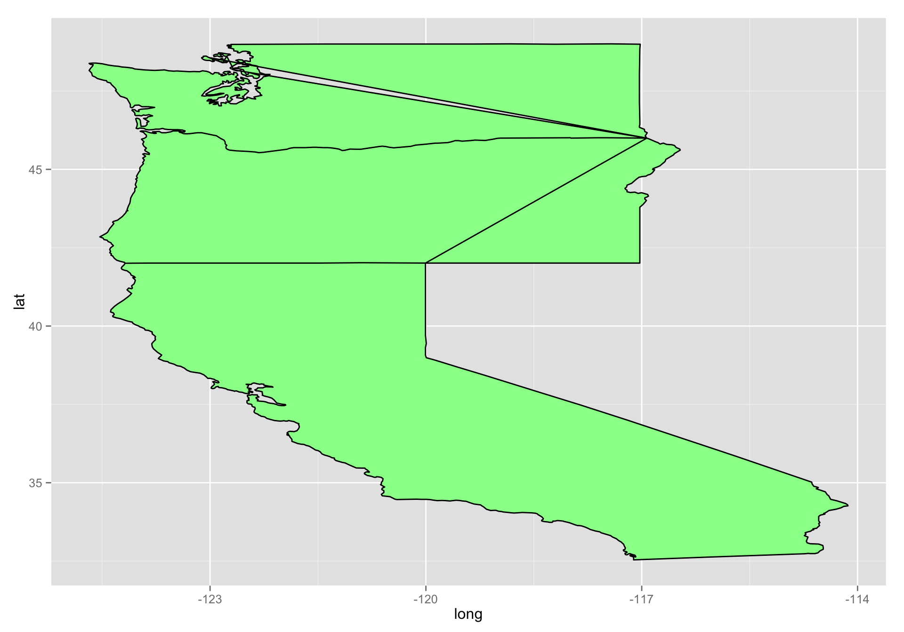
Man that is ugly!!
- I am just keeping people on their toes. What have we forgotten here?
groupcoord_fixed()
Let’s put those back in there:
ggplot(data = west_coast) + geom_polygon(aes(x = long, y = lat, group = group), fill = "palegreen", color = "black") + coord_fixed(1.3)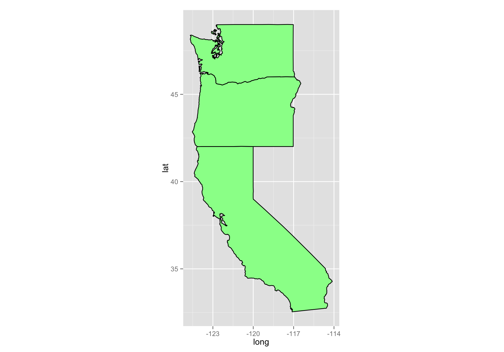
Phew! That is a little better!
Zoom in on California and look at counties
Getting the california data is easy:
ca_df <- subset(states, region == "california") head(ca_df) #> long lat group order region subregion #> 667 -120.0060 42.00927 4 667 california <NA> #> 668 -120.0060 41.20139 4 668 california <NA> #> 669 -120.0060 39.70024 4 669 california <NA> #> 670 -119.9946 39.44241 4 670 california <NA> #> 671 -120.0060 39.31636 4 671 california <NA> #> 672 -120.0060 39.16166 4 672 california <NA>Now, let’s also get the county lines there
counties <- map_data("county") ca_county <- subset(counties, region == "california") head(ca_county) #> long lat group order region subregion #> 6965 -121.4785 37.48290 157 6965 california alameda #> 6966 -121.5129 37.48290 157 6966 california alameda #> 6967 -121.8853 37.48290 157 6967 california alameda #> 6968 -121.8968 37.46571 157 6968 california alameda #> 6969 -121.9254 37.45998 157 6969 california alameda #> 6970 -121.9483 37.47717 157 6970 california alamedaPlot the state first but let’s ditch the axes gridlines, and gray background by using the super-wonderful
theme_nothing().ca_base <- ggplot(data = ca_df, mapping = aes(x = long, y = lat, group = group)) + coord_fixed(1.3) + geom_polygon(color = "black", fill = "gray") ca_base + theme_nothing()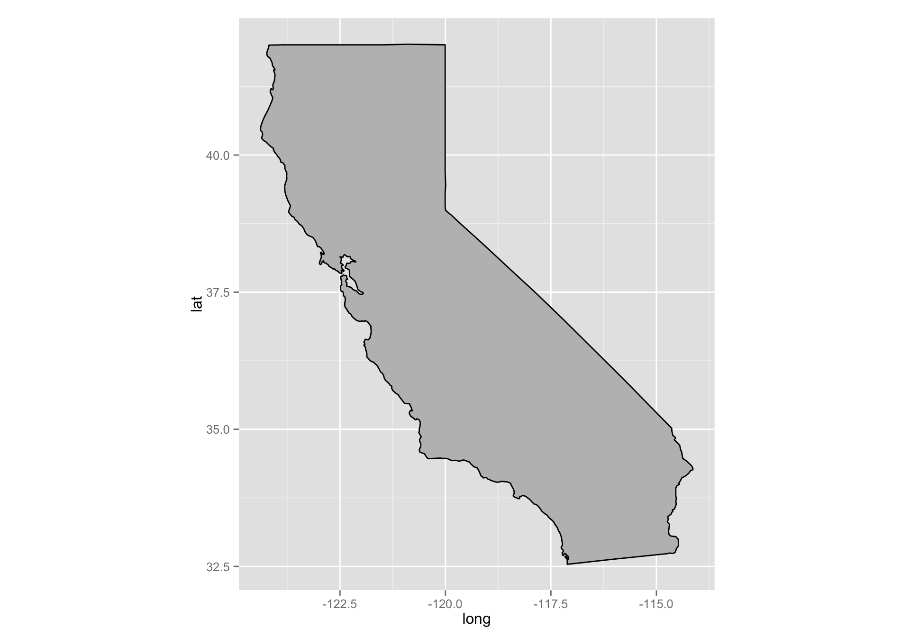
Now plot the county boundaries in white:
ca_base + theme_nothing() + geom_polygon(data = ca_county, fill = NA, color = "white") + geom_polygon(color = "black", fill = NA) # get the state border back on top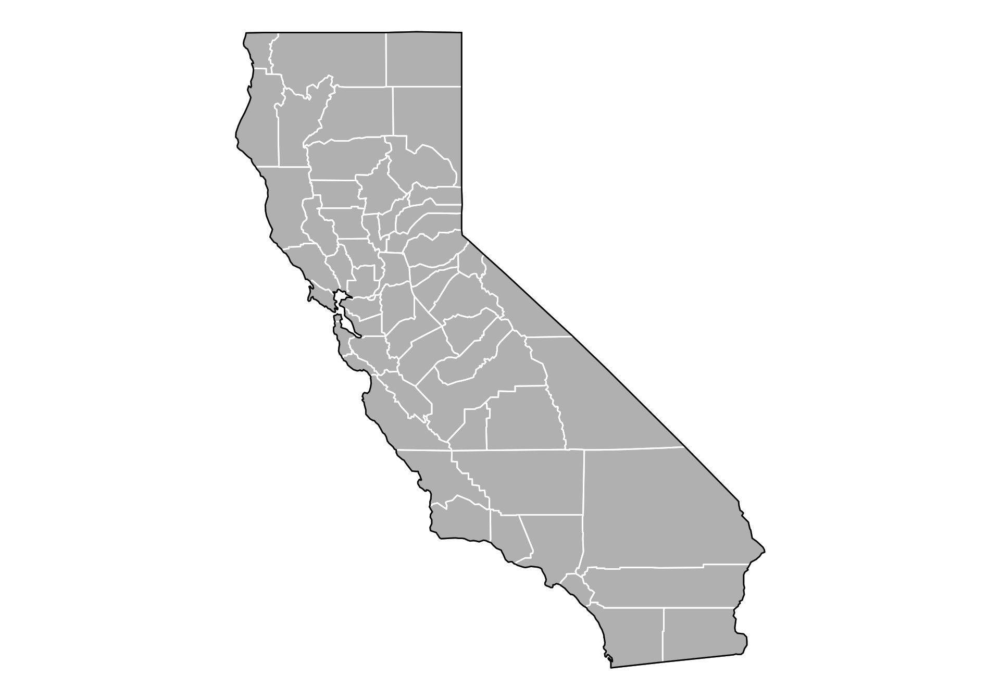
Get some facts about the counties
- The above is pretty cool, but it seems like it would be a lot cooler if we could plot some information about those counties.
- Now I can go to wikipedia or http://www.california-demographics.com/counties_by_population and grab population and area data for each county.
- In fact, I copied their little table on Wikipedia and saved it into
data/ca-counties-wikipedia.txt. In full disclosure I also edited the name of San Francisco from “City and County of San Francisco” to “San Francisco County” to be like the others (and not break my regex!) - Watch this regex fun:
library(stringr)
library(dplyr)
# make a data frame
x <- readLines("data/ca-counties-wikipedia.txt")
pop_and_area <- str_match(x, "^([a-zA-Z ]+)County\t.*\t([0-9,]{2,10})\t([0-9,]{2,10}) sq mi$")[, -1] %>%
na.omit() %>%
str_replace_all(",", "") %>%
str_trim() %>%
tolower() %>%
as.data.frame(stringsAsFactors = FALSE)
# give names and make population and area numeric
names(pop_and_area) <- c("subregion", "population", "area")
pop_and_area$population <- as.numeric(pop_and_area$population)
pop_and_area$area <- as.numeric(pop_and_area$area)
head(pop_and_area)
#> subregion population area
#> 1 alameda 1578891 738
#> 2 alpine 1159 739
#> 3 amador 36519 593
#> 4 butte 222090 1640
#> 5 calaveras 44515 1020
#> 6 colusa 21358 1151We now have the numbers that we want, but we need to attach those to every point on polygons of the counties. This is a job for
inner_joinfrom thedplyrpackagecacopa <- inner_join(ca_county, pop_and_area, by = "subregion")And finally, add a column of
people_per_mile:cacopa$people_per_mile <- cacopa$population / cacopa$area head(cacopa) #> subregion long lat group order region population area #> 1 alameda -121.4785 37.48290 157 6965 california 1578891 738 #> 2 alameda -121.5129 37.48290 157 6966 california 1578891 738 #> 3 alameda -121.8853 37.48290 157 6967 california 1578891 738 #> 4 alameda -121.8968 37.46571 157 6968 california 1578891 738 #> 5 alameda -121.9254 37.45998 157 6969 california 1578891 738 #> 6 alameda -121.9483 37.47717 157 6970 california 1578891 738 #> people_per_mile #> 1 2139.419 #> 2 2139.419 #> 3 2139.419 #> 4 2139.419 #> 5 2139.419 #> 6 2139.419
Now plot population density by county
If you were needing a little more elbow room in the great Golden State, this shows you where you can find it:
# prepare to drop the axes and ticks but leave the guides and legends
# We can't just throw down a theme_nothing()!
ditch_the_axes <- theme(
axis.text = element_blank(),
axis.line = element_blank(),
axis.ticks = element_blank(),
panel.border = element_blank(),
panel.grid = element_blank(),
axis.title = element_blank()
)
elbow_room1 <- ca_base +
geom_polygon(data = cacopa, aes(fill = people_per_mile), color = "white") +
geom_polygon(color = "black", fill = NA) +
theme_bw() +
ditch_the_axes
elbow_room1 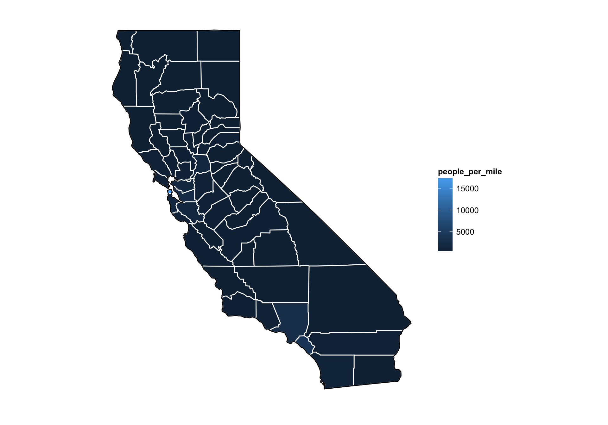
Lame!
- The popuation density in San Francisco is so great that it makes it hard to discern differences between other areas.
- This is a job for a scale transformation. Let’s take the log-base-10 of the population density.
- Instead of making a new column which is log10 of the
people_per_milewe can just apply the transformation in the gradient using thetransargument
elbow_room1 + scale_fill_gradient(trans = "log10")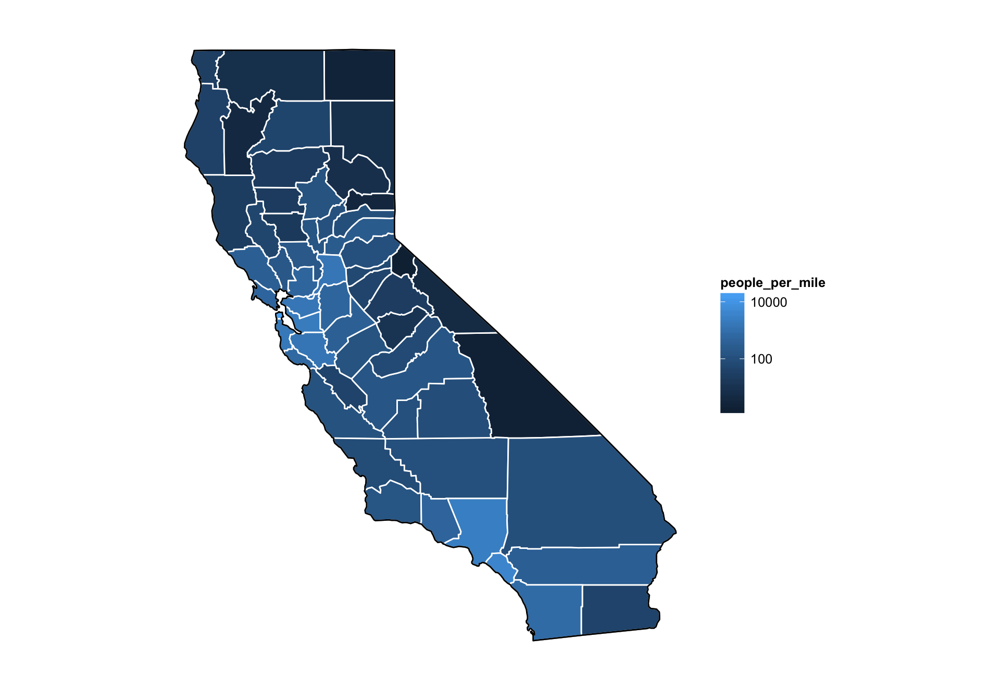
Still not great
I personally like more color than ggplot uses in its default gradient. In that respect I gravitate more toward Matlab’s default color gradient. Can we do something similar with ggplot?
eb2 <- elbow_room1 +
scale_fill_gradientn(colours = rev(rainbow(7)),
breaks = c(2, 4, 10, 100, 1000, 10000),
trans = "log10")
eb2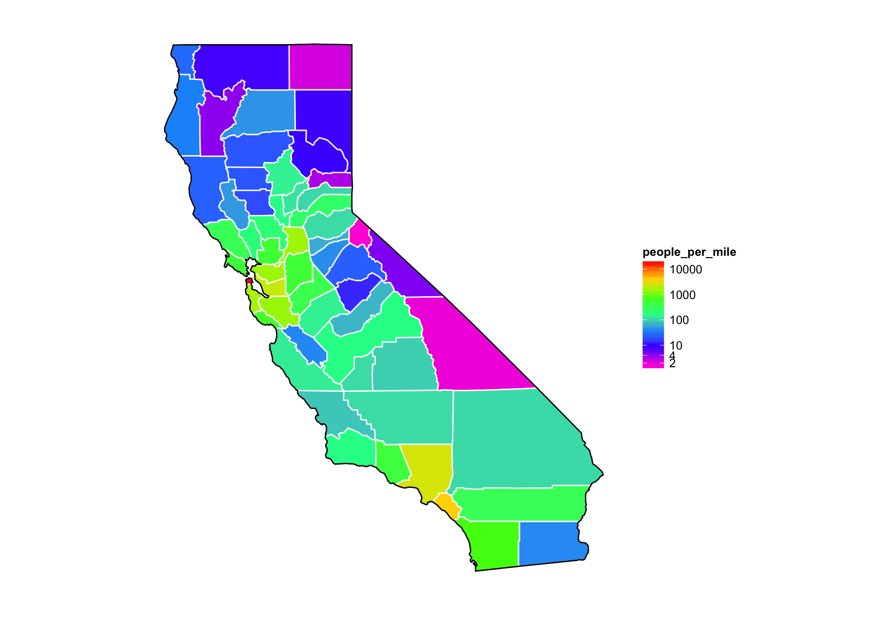
That is reasonably cool.
zoom in?
Note that the scale of these maps from package maps are not great. We can zoom in to the Bay region, and it sort of works scale-wise, but if we wanted to zoom in more, it would be tough.
Let’s try!
eb2 + xlim(-123, -121.0) + ylim(36, 38)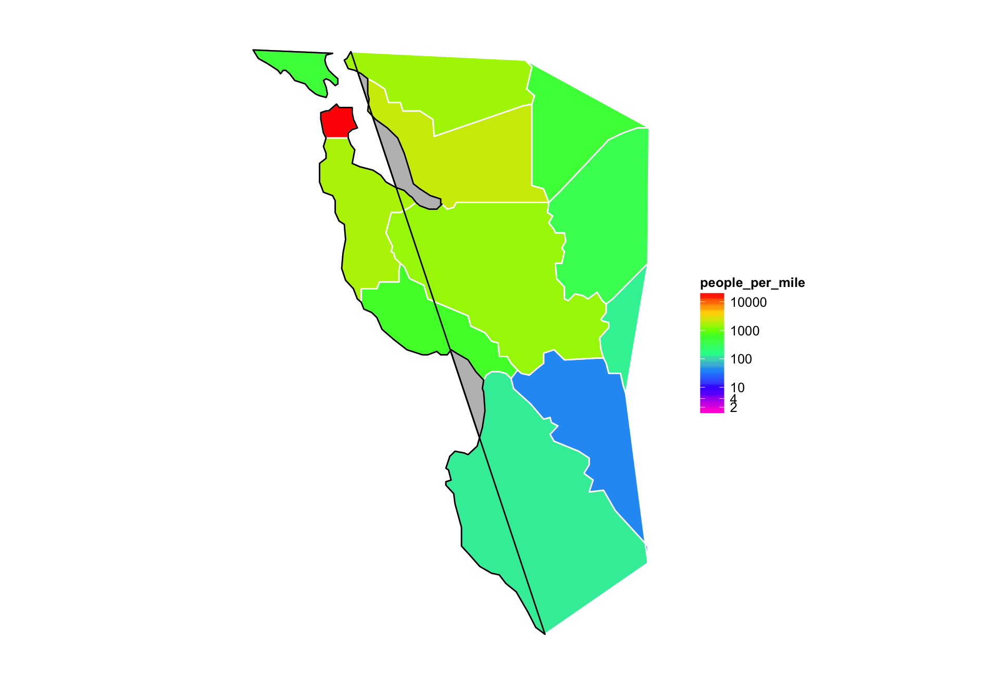
- Whoa! That is an epic fail. Why?
- Recall that
geom_polygon()connects the end point of agroupto its starting point. - And the kicker: the
xlimandylimfunctions inggplot2discard all the data that is not within the plot area.- Hence there are new starting points and ending points for some groups (or in this case the black-line permiter of California) and those points get connected. Not good.
True zoom.
- If you want to keep all the data the same but just zoom in, you can use the
xlimandylimarguments tocoord_cartesian(). Though, to keep the aspect ratio correct we must usecoord_fixed()instead ofcoord_cartesian(). This chops stuff off but doesn’t discard it from the data set:
eb2 + coord_fixed(xlim = c(-123, -121.0), ylim = c(36, 38), ratio = 1.3)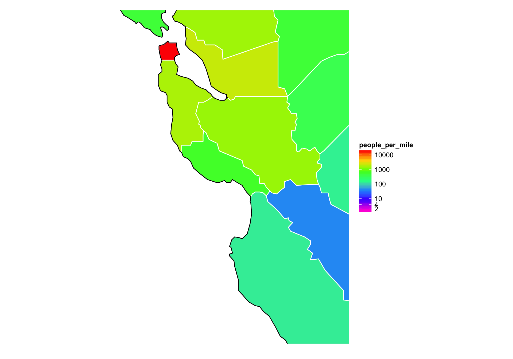
ggmap
The ggmap package is the most exciting R mapping tool in a long time! You might be able to get better looking maps at some resolutions by using shapefiles and rasters from naturalearthdata.com but ggmap will get you 95% of the way there with only 5% of the work!
Three examples
- I am going to run through three examples. Working from the small spatial scale up to a larger spatial scale.
- Named “sampling” points on the Sisquoc River from the “Sisquoctober Adventure”
- A GPS track from a short bike ride in Wilder Ranch.
- Fish sampling locations from the coded wire tag data base.
How ggmap works
- ggmap simplifies the process of downloading base maps from Google or Open Street Maps or Stamen Maps to use in the background of your plots.
- It also sets the axis scales, etc, in a nice way.
- Once you have gotten your maps, you make a call with
ggmap()much as you would withggplot() - Let’s do by example.
Sisquoctober
Here is a small data frame of points from the Sisquoc River.
sisquoc <- read.table("data/sisquoc-points.txt", sep = "\t", header = TRUE) sisquoc #> name lon lat #> 1 a17 -119.7603 34.75474 #> 2 a20-24 -119.7563 34.75380 #> 3 a25-28 -119.7537 34.75371 #> 4 a18,19 -119.7573 34.75409 #> 5 a35,36 -119.7467 34.75144 #> 6 a31 -119.7478 34.75234 #> 7 a38 -119.7447 34.75230 #> 8 a43 -119.7437 34.75251 # note that ggmap tends to use "lon" instead of "long" for longitude.ggmaptypically asks you for a zoom level, but we can try usingggmap’smake_bboxfunction:sbbox <- make_bbox(lon = sisquoc$lon, lat = sisquoc$lat, f = .1) sbbox #> left bottom right top #> -119.76198 34.75111 -119.74201 34.75507Now, when we grab the map ggmap will try to fit it into that bounding box. Let’s try:
# First get the map. By default it gets it from Google. I want it to be a satellite map sq_map <- get_map(location = sbbox, maptype = "satellite", source = "google") #> Warning: bounding box given to google - spatial extent only approximate. #> converting bounding box to center/zoom specification. (experimental) #> Map from URL : http://maps.googleapis.com/maps/api/staticmap?center=34.75309,-119.751995&zoom=16&size=640x640&scale=2&maptype=satellite&language=en-EN&sensor=false ggmap(sq_map) + geom_point(data = sisquoc, mapping = aes(x = lon, y = lat), color = "red") #> Warning: Removed 3 rows containing missing values (geom_point).
Nope! That was a fail, but we got a warning about it too. (Actually it is a little better than before because I hacked
ggmapa bit…) Let’s try using the zoom level. Zoom levels go from 3 (world scale to 20 (house scale)).
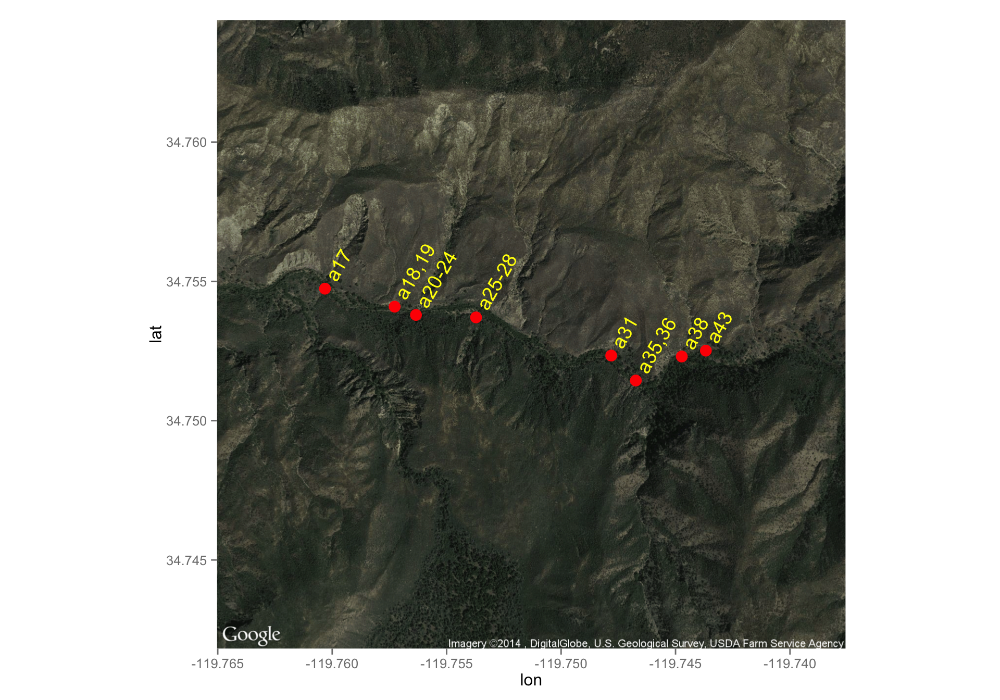# compute the mean lat and lon ll_means <- sapply(sisquoc[2:3], mean) sq_map2 <- get_map(location = ll_means, maptype = "satellite", source = "google", zoom = 15) #> Map from URL : http://maps.googleapis.com/maps/api/staticmap?center=34.753117,-119.751324&zoom=15&size=640x640&scale=2&maptype=satellite&language=en-EN&sensor=false ggmap(sq_map2) + geom_point(data = sisquoc, color = "red", size = 4) + geom_text(data = sisquoc, aes(label = paste(" ", as.character(name), sep="")), angle = 60, hjust = 0, color = "yellow")That is decent. How about if we use the “terrain” type of map:
sq_map3 <- get_map(location = ll_means, maptype = "terrain", source = "google", zoom = 15) #> Map from URL : http://maps.googleapis.com/maps/api/staticmap?center=34.753117,-119.751324&zoom=15&size=640x640&scale=2&maptype=terrain&language=en-EN&sensor=false ggmap(sq_map3) + geom_point(data = sisquoc, color = "red", size = 4) + geom_text(data = sisquoc, aes(label = paste(" ", as.character(name), sep="")), angle = 60, hjust = 0, color = "yellow")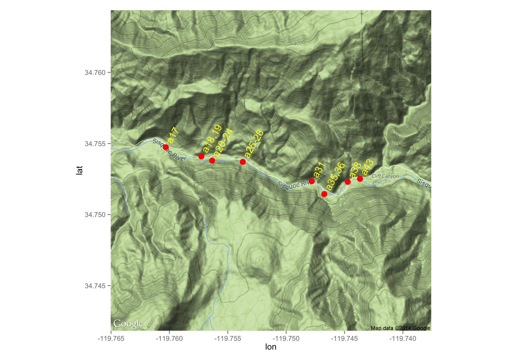
That is cool, but I would search for a better color for the lettering…
How about a bike ride?
- I was riding my bike one day with a my phone and downloaded the GPS readings at short intervals.
We can plot the route like this:
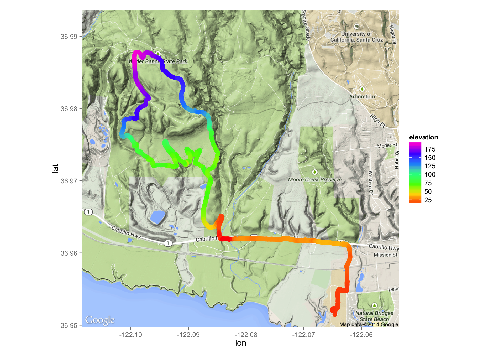bike <- read.csv("data/bike-ride.csv") head(bike) #> lon lat elevation time #> 1 -122.0646 36.95144 15.8 2011-12-08T19:37:56Z #> 2 -122.0646 36.95191 15.5 2011-12-08T19:37:59Z #> 3 -122.0645 36.95201 15.4 2011-12-08T19:38:04Z #> 4 -122.0645 36.95218 15.5 2011-12-08T19:38:07Z #> 5 -122.0643 36.95224 15.7 2011-12-08T19:38:10Z #> 6 -122.0642 36.95233 15.8 2011-12-08T19:38:13Z bikemap1 <- get_map(location = c(-122.080954, 36.971709), maptype = "terrain", source = "google", zoom = 14) #> Map from URL : http://maps.googleapis.com/maps/api/staticmap?center=36.971709,-122.080954&zoom=14&size=640x640&scale=2&maptype=terrain&language=en-EN&sensor=false ggmap(bikemap1) + geom_path(data = bike, aes(color = elevation), size = 3, lineend = "round") + scale_color_gradientn(colours = rainbow(7), breaks = seq(25, 200, by = 25))- See how we have mapped elevation to the color of the path using our rainbow colors again.
- Note that getting the right zoom and position for the map is sort of trial and error. You can go to google maps to figure out where the center should be (right click and choose “What’s here?” to get the lat-long of any point. )
The
make_bboxfunction has never really worked for me.
Fish sampling locations
For this, I have whittled down some stuff in the coded wire tag data base to georeferenced marine locations in British Columbia where at least one Chinook salmon was recovered in between 2000 and 2012 inclusive. To see how I did all that you can check out this
Let’s have a look at the data:
bc <- readRDS("data/bc_sites.rds")
# look at some of it:
bc %>% select(state_or_province:sub_location, longitude, latitude)
#> Source: local data frame [1,113 x 9]
#>
#> state_or_province water_type sector region area location sub_location
#> 1 2 M S 22 016 THOR IS 01
#> 2 2 M N 26 012 MITC BY 18
#> 3 2 M S 22 015 HARW IS 02
#> 4 2 M N 26 006 HOPK PT 01
#> 5 2 M S 23 017 TENT IS 06
#> 6 2 M S 28 23A NAHM BY 02
#> 7 2 M N 26 006 GIL IS 06
#> 8 2 M S 27 024 CLEL IS 06
#> 9 2 M S 27 23B SAND IS 04
#> 10 2 M N 26 012 DUVA IS 16
#> .. ... ... ... ... ... ... ...
#> Variables not shown: longitude (dbl), latitude (dbl)So, we have 1,113 points to play with.
What do we hope to learn?
These locations in BC are hierarchically structured. I am basically interested in how close together sites in the same “region” or “area” or “sector” are, and pondering whether it is OK to aggregate fish recoveries at a certain level for the purposes of getting a better overall estimate of the proportion of fish from different hatcheries in these areas.
- So, pretty simple stuff. I just want to plot these points on a map, and paint them a different color according to their sector, region, area, etc.
Let’s just enumerate things first, using
dplyr:bc %>% group_by(sector, region, area) %>% tally() #> Source: local data frame [42 x 4] #> Groups: sector, region #> #> sector region area n #> 1 48 008 1 #> 2 48 028 1 #> 3 48 311 1 #> 4 N 25 001 33 #> 5 N 25 003 15 #> 6 N 25 004 44 #> 7 N 25 02E 2 #> 8 N 25 02W 34 #> 9 N 26 006 28 #> 10 N 26 007 23 #> 11 N 26 008 10 #> 12 N 26 009 27 #> 13 N 26 010 3 #> 14 N 26 011 11 #> 15 N 26 012 72 #> 16 S 22 013 67 #> 17 S 22 014 58 #> 18 S 22 015 34 #> 19 S 22 016 32 #> 20 S 23 017 53 #> 21 S 23 018 27 #> 22 S 23 028 30 #> 23 S 23 029 14 #> 24 S 23 19A 12 #> 25 S 24 020 44 #> 26 S 24 19B 49 #> 27 S 27 021 4 #> 28 S 27 022 1 #> 29 S 27 023 2 #> 30 S 27 024 38 #> 31 S 27 025 58 #> 32 S 27 026 11 #> 33 S 27 027 23 #> 34 S 27 23B 109 #> 35 S 27 P025 1 #> 36 S 28 23A 23 #> 37 S 61 013 49 #> 38 S 62 014 29 #> 39 S 62 015 17 #> 40 S 62 016 20 #> 41 S AF 23A 2 #> 42 S AF SMRV 1That looks good. It appears like we could probably color code over the whole area down to region, and then down to area within subregions.
Makin’ a map.
- Let us try again to use
make_bbox()to see if it will work better when used on a large scale.
# compute the bounding box
bc_bbox <- make_bbox(lat = latitude, lon = longitude, data = bc)
bc_bbox
#> left bottom right top
#> -133.63297 47.92497 -122.33652 55.80833
# grab the maps from google
bc_big <- get_map(location = bc_bbox, source = "google", maptype = "terrain")
#> Warning: bounding box given to google - spatial extent only approximate.
#> converting bounding box to center/zoom specification. (experimental)
#> Map from URL : http://maps.googleapis.com/maps/api/staticmap?center=51.86665,-127.98475&zoom=6&size=640x640&scale=2&maptype=terrain&language=en-EN&sensor=false
# plot the points and color them by sector
ggmap(bc_big) +
geom_point(data = bc, mapping = aes(x = longitude, y = latitude, color = sector))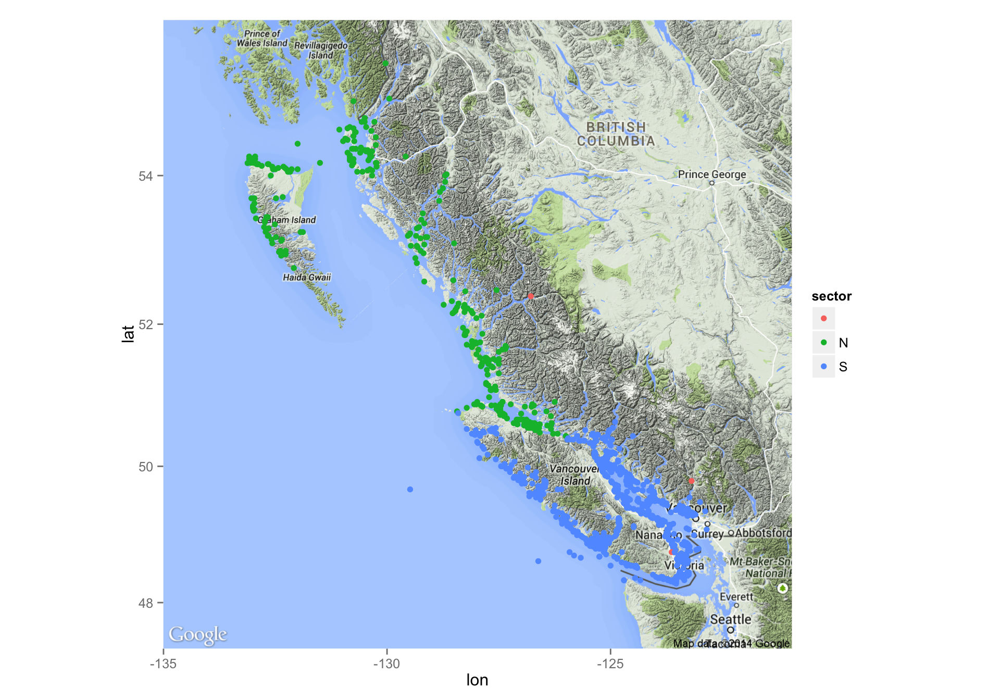
- Cool! That was about as easy as could be. North is in the north, south is in the south, and the three reddish points are clearly aberrant ones at the mouths of rivers.
Coloring it by region
- We should be able to color these all by region to some extent (it might get overwhelming), but let us have a go with it.
- Notice that region names are unique overall (not just within N or S) so we can just color by region name.
ggmap(bc_big) +
geom_point(data = bc, mapping = aes(x = longitude, y = latitude, color = region))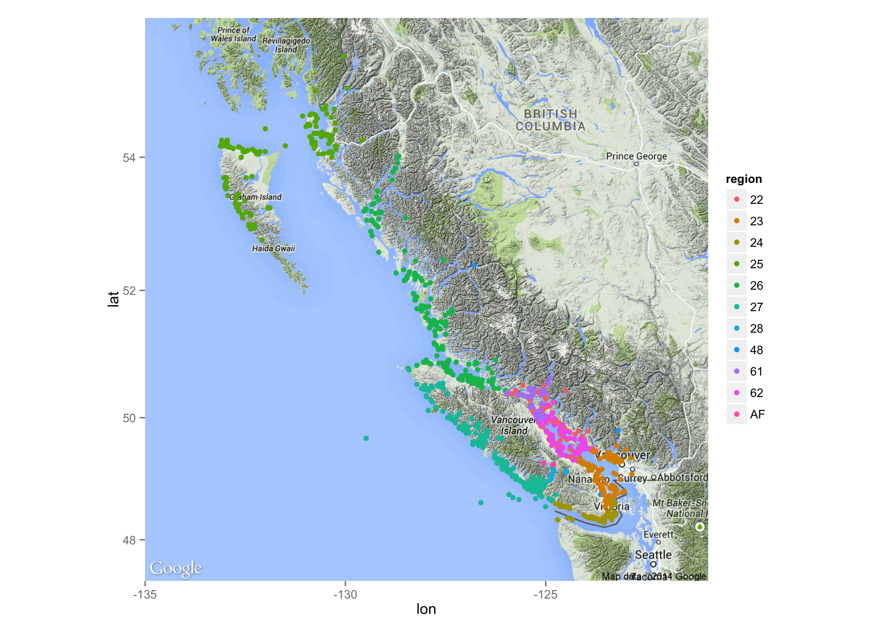
- Once again that was dirt easy, though at this scale with all the different regions, it is hard to resolve all the colors.
Zooming in on each region and coloring by area
- It is time to really put this thing through its paces. (Keeping in mind that
make_bbox()might fail…) - I want to make series of maps. One for each region, in which the the areas in that region are colored differently.
- How? Let’s make a function: you pass it the region and it makes the plot.
- Keep in mind that there are no factors in this data frame so we don’t have to worry about dropping levels, etc.
region_plot <- function(MyRegion) {
tmp <- bc %>% filter(region == MyRegion)
bbox <- make_bbox(lon = longitude, lat = latitude, data = tmp)
mymap <- get_map(location = bbox, source = "google", maptype = "terrain")
# now we want to count up how many areas there are
NumAreas <- tmp %>% summarise(n_distinct(area))
NumPoints <- nrow(tmp)
the_map <- ggmap(mymap) +
geom_point(data = tmp, mapping = aes(x = longitude, y = latitude), size = 4, color = "black") +
geom_point(data = tmp, mapping = aes(x = longitude, y = latitude, color = area), size = 3) +
ggtitle(
paste("BC Region: ", MyRegion, " with ", NumPoints, " locations in ", NumAreas, " area(s)", sep = "")
)
ggsave(paste("bc_region", MyRegion, ".pdf", sep = ""), the_map, width = 9, height = 9)
}So, with that function we just need to cycle over the regions and make all those plots.
Note that I am saving them to PDFs because it is no fun to make a web page with all of those in there.
dump <- lapply(unique(bc$region), region_plot)comments powered by Disqus